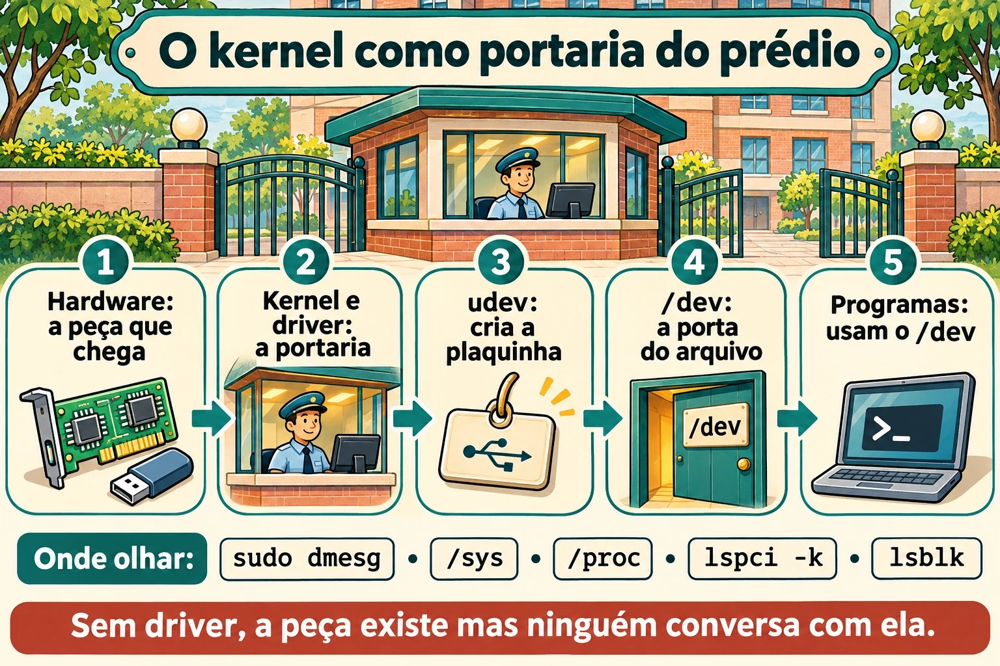
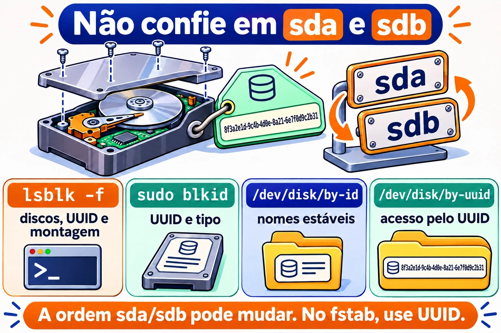

Aula 5.1 · Hardware pelo kernel
O kernel é quem conversa com o hardware. Tudo o que ele vê, ele mostra em dois lugares: o /proc e o /sys. Nesta aula você aprende a perguntar ao kernel que hardware existe, qual driver cuida de cada peça e o que aconteceu quando algo foi conectado. Numa VM, também vai ver que o "hardware" é o que o Proxmox inventou para ela.
Núcleo desta aula:
lspci -k,lsblk,lsusb,dmesg(oujournalctl -k),/proc/cpuinfoe/proc/meminfo, a ideia de driver, e o udev criando os arquivos em/dev. O resto é aprofundamento.
| Ficha | |
|---|---|
| Módulo | M5 · Hardware, kernel e virtualização, aula 1 de 3 |
| Quando | Semana 9 |
| Semana | 9 |
| Tempo | 2 h a 2 h 30 |
| VMs | rocky-lab (201) e debian-lab (202) |
| Antes | Snapshot m5a1-inicio nas duas |
1 Aquecimento
Responda sem pesquisar. As respostas estão no Gabarito.
- Se você plugar um disco novo num servidor ligado, precisa reiniciar para o Linux enxergar?
- O que é um driver, em uma frase?
- Onde o kernel anota o que aconteceu desde o boot: num arquivo de log comum ou em outro lugar?
2 Por que importa
| Situação real | O que você faz com esta aula |
|---|---|
| O cliente diz que "a placa de rede sumiu" depois de uma atualização | lspci -k mostra se a placa existe e se algum driver a assumiu |
| Você acrescentou um disco no Proxmox e quer saber o nome dele | lsblk e dmesg mostram o disco novo, sem reiniciar |
| Um servidor físico está lento e você suspeita do disco | dmesg mostra erros de I/O, reset de controladora e setores ruins |
| Você precisa inventariar memória e CPU de 20 máquinas | /proc/meminfo, /proc/cpuinfo e lscpu dão a resposta por script |
3 Modelo mental
Pense no kernel como a portaria de um prédio:
- Cada peça de hardware é um morador. Quando ele chega, a portaria registra a chegada no livro de ocorrências, que é o
dmesg. - Para cada morador, a portaria escala um funcionário que sabe falar com ele: o driver. Sem funcionário, o morador existe, mas ninguém conversa com ele.
- O
/sysé o cadastro organizado de todos os moradores, por andar e por tipo. O/procé o quadro de avisos com números do dia: memória, CPU e processos. - O udev é o funcionário que, a cada chegada, coloca uma plaquinha na porta, ou seja, cria o arquivo em
/dev, como/dev/sdb, e dá a ele nomes estáveis em/dev/disk/by-id.
Os comandos lspci, lsusb e lsblk são só jeitos bonitos de ler esse cadastro.


4 O essencial
/proc e /sys
Os dois são sistemas de arquivos virtuais: não ocupam disco, e o kernel gera o conteúdo na hora em que você lê.
| Caminho | Mostra |
|---|---|
/proc/cpuinfo | Cada CPU, o modelo e as flags, como vmx ou svm para virtualização |
/proc/meminfo | Memória total, livre, disponível, cache e swap |
/proc/cmdline | Os parâmetros com que o kernel subiu (4.4) |
/proc/partitions | Os discos e partições que o kernel conhece |
/proc/interrupts e /proc/ioports | Interrupções e portas de I/O |
/sys/class/net/ | Uma pasta por placa de rede |
/sys/block/ | Uma pasta por disco |
/sys/bus/pci/devices/ | Um item por dispositivo PCI |
Atalhos que leem esses arquivos por você: lscpu, free -h e lsmem.
Os comandos ls*
| Comando | Lista | Opção que mais vale |
|---|---|---|
lspci | Dispositivos PCI: rede, disco, vídeo | -k mostra o driver em uso; -nn mostra os IDs de fabricante e modelo |
lsusb | Dispositivos USB | -t mostra em árvore |
lsblk | Discos e partições | -f mostra o sistema de arquivos e o UUID |
lscpu | CPU | sem opção |
lshw | Tudo | -short dá um resumo; precisa de root e, às vezes, de instalação |
Se o lspci ou o lsusb não existirem, instale os pacotes pciutils e usbutils.
O que é um driver
Um driver é o código do kernel que sabe falar com um tipo de hardware. Ele pode estar embutido no kernel ou ser um módulo carregado quando o hardware aparece. A 5.2 trata dos módulos. No lspci -k, a linha Kernel driver in use diz quem assumiu o dispositivo. Se ela não aparece, nenhum driver assumiu, e o dispositivo não funciona.
dmesg e journalctl -k
O kernel guarda as mensagens num anel de memória (ring buffer). Quando o anel enche, as mais antigas somem.
sudo dmesg -T | less # -T: horário legível
sudo dmesg -w # acompanha ao vivo
sudo dmesg -l err,warn # só erros e avisos
journalctl -k -b # mensagens do kernel deste boot, via journal
journalctl -k -b -1 # do boot anterior, se o journal for persistenteO journalctl -k tem uma vantagem: ele guarda as mensagens de boots anteriores, coisa que o dmesg não faz.
udev e /dev
Quando o kernel detecta um dispositivo, ele avisa o systemd-udevd. O udev cria o arquivo em /dev, ajusta as permissões e cria os links estáveis:
ls -l /dev/disk/by-id/ /dev/disk/by-uuid/ /dev/disk/by-path/
udevadm info /dev/sda # tudo o que o udev sabe sobre o disco
sudo udevadm monitor # mostra os eventos ao vivoRegra de ouro: nomes como sda e sdb dependem da ordem em que os discos aparecem e podem mudar no próximo boot. Em /etc/fstab e em scripts, use o UUID ou o by-id.
Rocky × Debian
| Item | Rocky | Debian |
|---|---|---|
dmesg sem sudo | Normalmente funciona | Recusado: kernel.dmesg_restrict = 1 |
lspci na instalação mínima | Pode faltar: dnf install pciutils | Pode faltar: apt install pciutils |
| Regras do udev | /usr/lib/udev/rules.d/ (do sistema) e /etc/udev/rules.d/ (suas) | Iguais |
5 Lab guiado
Passo 0 · Snapshot e pasta
No nó Proxmox:
qm snapshot 201 m5a1-inicio
qm snapshot 202 m5a1-inicioEm cada VM:
mkdir -p ~/lab51 && cd ~/lab51Passo 1 · Inventário pelo /proc
Nas duas VMs:
lscpu | head -20
grep -c ^processor /proc/cpuinfo
grep -m1 'model name' /proc/cpuinfo
free -h
grep -E 'MemTotal|MemAvailable|SwapTotal' /proc/meminfo
cat /proc/partitions
lsblk -fCompare o modelo de CPU das duas com o do nó Proxmox. Com o tipo de CPU host, a VM enxerga o mesmo modelo do processador físico. Anote em ~/lab51/inventario.txt: CPUs, memória total, discos e partições.
Passo 2 · Quem é quem no PCI e no USB
lspci
lspci -k | grep -A3 -iE 'ethernet|scsi|sata|virtio'
lsusb
lsusb -tVocê vai ver dispositivos com o nome Red Hat, Inc. Virtio: são as peças virtuais que o Proxmox (QEMU) oferece, com drivers virtio do lado do Linux. No lsusb, aparece um QEMU USB Tablet: é o mouse do console noVNC.
Anote: qual driver cuida da placa de rede, e qual cuida da controladora de disco?
Decida 1
No próximo passo você vai acrescentar um disco de 1 GB na debian-lab, com ela ligada. Antes, responda: o que o lsblk mostra logo depois?
- A) Nada novo: o disco só aparece depois de reiniciar.
- B) Um disco novo,
sdbpor exemplo, sem partições. - C) Um disco novo, já com uma partição formatada.
Marque uma opção antes de seguir.
Passo 3 · Hotplug ao vivo
Na debian-lab, abra duas sessões SSH. Na primeira:
sudo udevadm monitor --udev --subsystem-match=blockNa segunda:
sudo dmesg -wTAgora acrescente o disco. Pela interface do Proxmox: VM 202, depois Hardware, Add e Hard Disk, com barramento SCSI, storage vm-hdd e tamanho 1 GB. Ou, no shell do nó:
qm set 202 --scsi2 vm-hdd:1Olhe as duas sessões: o dmesg mostra o kernel achando o disco, e o udevadm monitor mostra o evento add para o udev. Pare os dois com Ctrl+C e confira:
| Se você marcou | Resultado | Por quê |
|---|---|---|
| A | Errou | O barramento SCSI virtual avisa o kernel na hora: isso é hotplug |
| B | Acertou | O kernel vê o disco, e o udev cria o /dev/sdb. Disco novo vem vazio |
| C | Errou | Ninguém particiona nem formata sozinho. Isso é com você, no M9 |
lsblk
ls -l /dev/disk/by-id/ | grep -v part
udevadm info /dev/sdb | head -30Confirme pelo tamanho qual nome o disco de 1 GB ganhou. O disco de 2 GB da Aula 2.2 já está no scsi1 e costuma ser o sdb; aí o novo vira o sdc. Use o nome que você viu no resto da aula, no lugar de sdb, e não mexa no disco de 2 GB: ele é do M9.
Para fixar: disco novo aparece sem reiniciar, e o nome sdX é só a ordem de chegada. O nome estável está em /dev/disk/by-id.
Decida 2
Nas duas VMs, como usuário comum e sem sudo, você vai rodar dmesg | tail -3. O que acontece?
- A) As duas mostram as mensagens.
- B) As duas recusam.
- C) Uma mostra, e a outra recusa.
Marque uma opção antes. Depois rode nas duas, e também sysctl kernel.dmesg_restrict.
| Se você marcou | Resultado | Por quê |
|---|---|---|
| A | Errou | A Debian protege o anel do kernel de usuários comuns |
| B | Errou, na maioria das instalações | A Rocky costuma vir com dmesg_restrict = 0 |
| C | Acertou | A Debian vem com kernel.dmesg_restrict = 1, e a Rocky normalmente com 0. Confira o valor real nas suas VMs |
Para fixar: o dmesg pode revelar endereços e detalhes úteis a um atacante. Por isso a Debian o restringe. Em script de monitoração, rode com sudo ou use journalctl -k num grupo com acesso ao journal.
Passo 4 · Passear pelo /sys
ls /sys/class/net/
cat /sys/class/net/*/address
cat /sys/class/net/*/operstate
cat /sys/block/sdb/size # em setores de 512 bytes
echo $(( $(cat /sys/block/sdb/size) * 512 / 1024 / 1024 )) MiB
cat /sys/block/sdb/queue/rotational # 1 = disco girando, 0 = SSD ou virtual sem dizer
readlink -f /sys/class/net/*/device/driverRepare: o lsblk e o ip link que você já usa leem exatamente esses arquivos.
6 Quebre e conserte
Você vai fazer o kernel "esquecer" o disco de teste e depois fazê-lo procurar de novo, sem reiniciar. Isso é o que se faz num servidor físico quando um disco novo não aparece.


Antes, confira de novo com lsblk que o sdb é o disco de 1 GB e que ele não tem nada montado. Nunca faça isto no disco do sistema.
lsblk /dev/sdb
echo 1 | sudo tee /sys/block/sdb/device/delete
lsblk
sudo dmesg | tail -5O disco sumiu para o Linux, embora continue ligado na VM. Agora, sem olhar a resposta abaixo, tente descobrir como mandá-lo procurar de novo. Dica: o caminho fica em /sys/class/scsi_host/.
O conserto:
for h in /sys/class/scsi_host/host*/scan; do echo "- - -" | sudo tee "$h" >/dev/null; done
lsblkOs três traços querem dizer "qualquer canal, qualquer alvo, qualquer LUN". O disco volta, às vezes com outro nome. Por isso, mais uma vez, scripts e fstab usam UUID ou by-id.
7 Armadilhas
- Confiar em
sdaesdb. A ordem pode mudar num boot com um disco a mais ou a menos. Use UUID ouby-id. - Achar que o
dmesgguarda tudo. O anel tem tamanho fixo e se apaga no boot. Para o histórico, usejournalctl -k, com o journal persistente da 3.x. - Esquecer o
-knolspci. Sem ele, você vê o hardware mas não o driver, que é justamente o que importa num "a placa sumiu". - Rodar o
device/deleteno disco errado. O sistema perde o disco com tudo montado nele. Confirme pelo tamanho e pelolsblkantes. - Editar arquivos em
/usr/lib/udev/rules.d/. A próxima atualização sobrescreve. As suas regras vão em/etc/udev/rules.d/. - Esperar ver o hardware físico numa VM. Dentro da VM, você vê o hardware virtual que o Proxmox oferece. A saúde dos discos físicos se olha no nó, e não na VM.
8 Quiz
- Qual a diferença entre o
/proce o/sys, em uma frase cada? - Qual comando mostra qual driver assumiu a placa de rede?
- Por que não se usa
/dev/sdbno/etc/fstab? - Em que arquivo estão as interrupções em uso?
- Como ver as mensagens do kernel do boot anterior?
- What does udev do when the kernel detects a new device?
9 Cola
Para saber de cor
| Comando | Faz |
|---|---|
lspci -k | Dispositivos PCI e o driver de cada um |
lsusb / lsusb -t | Dispositivos USB, em lista ou em árvore |
lsblk -f | Discos, partições, sistema de arquivos e UUID |
lscpu / free -h | CPU e memória |
sudo dmesg -T / -w | Mensagens do kernel, com hora, ou ao vivo |
journalctl -k -b / -b -1 | Mensagens do kernel deste boot ou do anterior |
udevadm info /dev/X / udevadm monitor | O que o udev sabe de um dispositivo / eventos ao vivo |
/dev/disk/by-id, by-uuid | Nomes estáveis dos discos |
Para consultar
lspci -nn, lspci -v, lshw -short, lsmem, /proc/interrupts, /proc/ioports, /proc/dma, /sys/class/, /sys/bus/pci/devices/, /sys/block/*/queue/rotational, /sys/class/scsi_host/host*/scan, /sys/block/*/device/delete, /etc/udev/rules.d/, udevadm trigger, kernel.dmesg_restrict.
Flashcards
| Pergunta | Resposta |
|---|---|
/proc e /sys ocupam disco? | Não: o kernel gera o conteúdo na hora |
Quem cria os arquivos em /dev? | O udev (systemd-udevd) |
| Disco novo numa VM ligada exige reboot? | Não: é hotplug |
| Onde ficam as regras de udev do administrador? | /etc/udev/rules.d/ |
Por que o dmesg falha sem sudo na Debian? | kernel.dmesg_restrict = 1 |
10 Checklist e fechamento
- [ ] Fiz o inventário de CPU, memória e discos pelo
/proce pelos comandosls* - [ ] Achei o driver da placa de rede e da controladora de disco
- [ ] Vi um disco entrar ao vivo no
dmesge noudevadm monitor - [ ] Entendi por que o
dmesgse comporta diferente nas duas distros - [ ] Fiz o kernel esquecer um disco e procurar de novo
- [ ] Sei por que nomes
sdXnão servem para o fstab
Último exercício, sem olhar a aula: tire o disco de teste do jeito limpo. Primeiro, dentro da debian-lab, faça o kernel soltá-lo:
echo 1 | sudo tee /sys/block/sdb/device/deleteDepois, na interface do Proxmox, vá em VM 202, depois Hardware, selecione o disco scsi2, clique em Detach e, em seguida, em Remove no Unused Disk. Isso apaga o disco de teste de 1 GB, que não tem nada.
Reboot e conferência: reinicie as duas VMs e confira:
lsblk # só os discos originais
systemctl is-system-running # running
ls ~/lab51Snapshot de fim, no nó Proxmox:
qm snapshot 201 m5a1-fim
qm snapshot 202 m5a1-fim11 Na vida real
Missão, só leitura. Num servidor real que você administra, de preferência um físico, rode apenas estes comandos, que não mudam nada:
lscpu | grep -E 'Model name|^CPU\(s\)'
free -h
lsblk -o NAME,SIZE,TYPE,MODEL,ROTA,MOUNTPOINTS
lspci -k | grep -A3 -iE 'ethernet|raid|sas|nvme'
sudo dmesg -T -l err,warn | tail -20
journalctl -k -p warning -b --no-pager | tail -20Responda: os discos são girando ou SSD? A placa de rede tem driver em uso? Os erros e avisos do kernel falam de disco, memória ou rede? Num servidor físico, mensagens com I/O error, reset ou Machine Check merecem uma conversa com o responsável. Não mude nada sozinho.
Diário: escreva três linhas sobre o que você aprendeu hoje e uma dúvida que ficou.
Amanhã, sem olhar:
- Diga três arquivos do
/proce o que cada um mostra. - Escreva o comando que mostra o driver de cada dispositivo PCI.
- Explique, em uma frase, o que o udev faz quando chega um disco.
12 Aprofundar quando quiser
- Escrever uma regra de udev em
/etc/udev/rules.d/que dá um nome fixo a um disco ou a uma placa de rede. udevadm testeudevadm triggerpara testar regras sem plugar nada.- Saúde de hardware físico:
smartctl(pacotesmartmontools),rasdaemone as mensagens EDAC de memória. lshw -htmlpara um inventário completo em página.- Coldplug: como o udev reprocessa, no boot, os dispositivos que já estavam lá.
No DeepTutor: !explica /proc, /sys e /dev, !feynman o que o udev faz, !quiz hardware pelo kernel.
Gabarito comentado
Aquecimento
- Em geral, não. Discos SAS, SATA com hotplug, NVMe com suporte e discos virtuais aparecem com a máquina ligada. Se não aparecerem, dá para pedir uma nova varredura pelo
/sys. - Um driver é o código do kernel que sabe conversar com um tipo de hardware.
- Num anel de memória do kernel, lido pelo
dmesg. O journal também guarda uma cópia, que ojournalctl -klê.
Quiz
- O
/procmostra processos e números do kernel, como memória e CPU. O/sysmostra os dispositivos e drivers de forma organizada, por barramento e por classe. lspci -k, na linha Kernel driver in use.- Porque o nome
sdXdepende da ordem em que os discos aparecem e pode mudar. O UUID e oby-idnão mudam. - Em
/proc/interrupts. journalctl -k -b -1, desde que o journal seja persistente.- udev receives the kernel event, creates the device file in /dev with the right permissions, adds stable symlinks such as /dev/disk/by-id, and runs any matching rules.